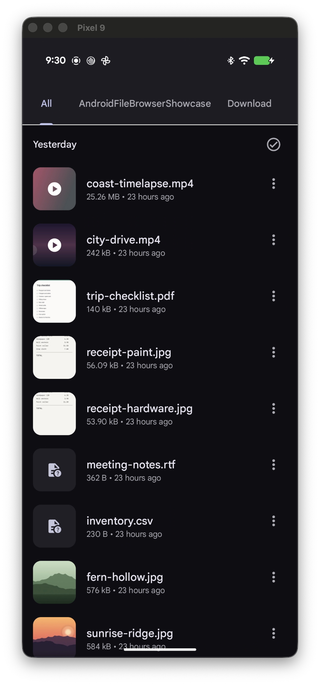

Apps
Manage installed apps.
Drag APK, XAPK, APKS, or split ZIP packages from Finder to install them. Clear recovery choices explain downgrades, signature conflicts, and failed installs.

Phone Tools
Search, manage, capture, and control.
Files and storage
Search shared storage by name, type, or date. Check space used by photos, videos, apps, and more.

Apps
Drag APK, XAPK, APKS, or split ZIP packages from Finder to install them. Clear recovery choices explain downgrades, signature conflicts, and failed installs.
Trash
Restore files deleted through ASOP File Browser, or remove them for good.

Capture and control
Open apps, tap, and type without reaching for the phone.
Choose one or more displays. Multiple displays are saved side by side in one image.
Choose one or more displays. Multiple displays are saved side by side in one video.
See the live screen and use it from your Mac.
Each screen has its own controls for navigation, volume, rotation, screenshots, and power.

Your phone stays in charge
Private app files may stay locked.
Get started
Use a USB cable or pair over Wi-Fi.
Open the connection guide